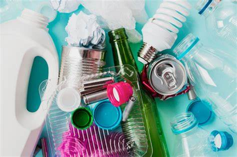

Mi primera página con estilo
¡Residuos Urbanos!
Los residuos sólidos urbanos (RSU) son todos aquellos desechos
generados en las áreas urbanas como resultado de las actividades
humanas. Incluyen una amplia variedad de materiales, como restos de
alimentos, papel, cartón, plásticos, vidrio, metales y textiles, entre
otros. Los RSU provienen de hogares, comercios, oficinas, instituciones
y pequeñas industrias.
Acciones para evitar los Residuos Urbanos:
- Elegir productos duraderos y de calidad
- Dar una segunda vida a objetos en lugar de desecharlos.
- Separar los residuos según el tipo de material (plástico, papel, vidrio, metal)
- Crear una compostera para residuos orgánicos como restos de comida y podas de jardín.

¡Este es el principio de un diseñador web!
Creada por Valeria Monserrat Lira Zumaya, Vania Gomez Maldonado, Dagoberto Avila Díaz, Carlos Adán Pineda Peréz y Héctor Sebastián Arzate Aguirre